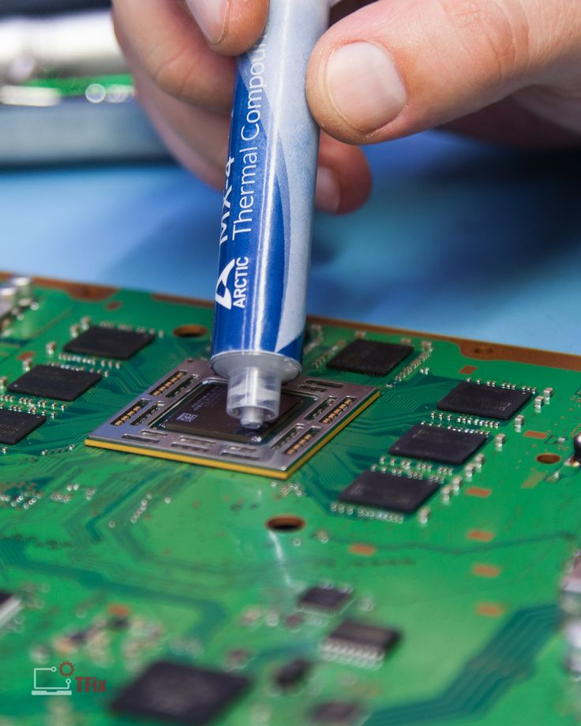
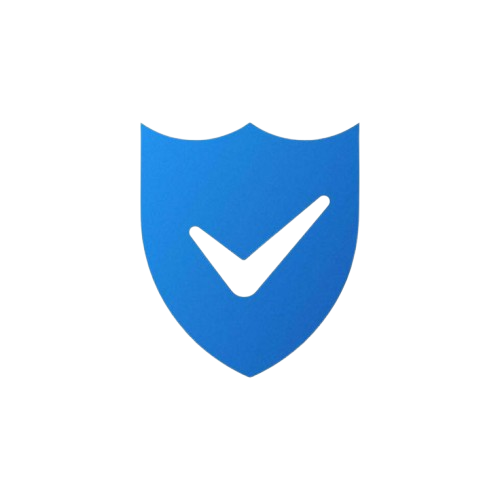

¿Quién soy?
Soy Gabriel, estudiante de Ingeniería de Sistemas
y técnico en
soporte.
Me especializo en mantenimiento de portátiles,instalación de sistemas,
respaldo de información y mejoras de rendimiento.

- Instalación de Windows 10 y 11
- Cambio de disco duro HDD a SSD
- Respaldo y recuperación de información
- Mantenimiento interno y externo
- Instalación de programas y drivers
- Cambio de pasta térmica
- Diagnóstico y revisión general del equipo
- Optimización de sistema (mejora de rendimiento)
- Configuración inicial del portátil
- Asesoría técnica y recomendaciones
SERVICIOS
- Diagnóstico y revisión general: $15.000-$20.000 pesos
- Mantenimiento interno y externo: $30.000-$40.000 pesos
- Cambio de pasta térmica (pasta incluida): $15.000-$20.000 pesos
- Instalación de Windows 10 u 11: $30.000-$40.000 pesos
- Optimización de sistema (mejora de rendimiento): $20.000-$30.000 pesos
- Respaldo de información (varia segun la cantidad): $35.000-$50.000 pesos
- Cambio de disco duro HDD a SSD (instalación): $30.000-$40.000 pesos
- Instalación de programas y drivers: $20.000-$30.000 pesos
- Configuración inicial del equipo: $15.000-$20.000 pesos
- Asesoría técnica y recomendaciones: Incluida
PRECIOS APROXIMADOS
Los precios pueden variar según el estado del equipo y el trabajo requerido. Cualquier cambio o compra de piezas será informado previamente al cliente.

- Revisión y diagnóstico: evaluación completa del equipo para identificar fallas de hardware y software.
- Respaldo de información: respaldo básico de seguridad cuando el proceso lo requiere. El respaldo completo y recuperación de datos se ofrece como servicio adicional.
- Mantenimiento o cambio de piezas: limpieza, optimización o reemplazo de componentes solo con previa autorización.
- Pruebas finales: verificación de encendido, rendimiento, estabilidad y correcto funcionamiento.
- Entrega con garantía: explicación clara del trabajo realizado y garantía sobre el servicio prestado.
COMO TRABAJO
El cliente es informado en cada etapa del proceso. No se realiza ningún cambio sin su aprobación.

- Garantía aplicada únicamente sobre el trabajo realizado.
- Uso de repuestos informados y aprobados por el cliente.
- No se sustituyen piezas sin conocimiento del propietario.
- Respeto total por la privacidad y el contenido del equipo.
- Precios claros, sin costos ocultos ni sorpresas.
- Trato responsable, puntual y profesional.
- Atención personalizada según la necesidad del equipo.
GARANTÍA Y CONFIANZA
- Escríbeme aquí
- Ubicación: Riohacha, La Guajira
- Horario de atención: Lunes a sábado, 8:00 a.m. – 6:00 p.m.
- Atención: Citas y servicios bajo disponibilidad.